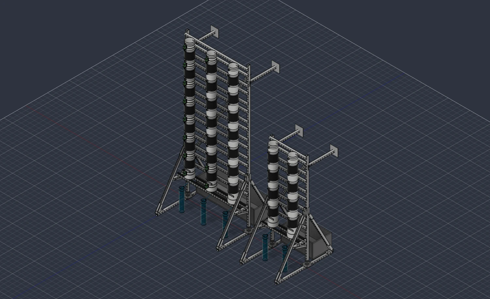
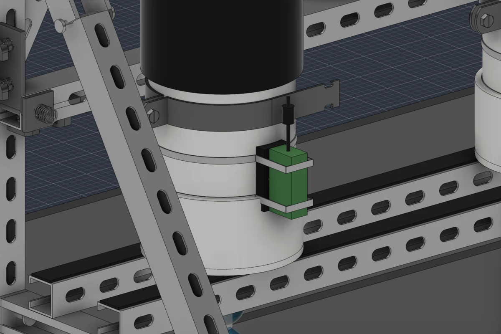

Mechanical design
Moisture-flow research apparatus
A parametric CAD assembly and 29-sheet drawing package for a five-column apparatus that supports aggregate moisture-flow research.

- Organization
- UC Pavement Research Center
- Design scope
- Five test columns
- Deliverable
- 29-sheet Autodesk Fusion drawing package
The design problem
The apparatus needed to bring together five segmented columns, sensor mounts, the supporting rack, and drainage. The parts had to fit as an assembly while leaving access for instrumentation and installation.
How I developed the assembly
I built the parametric assembly in Autodesk Fusion and revised the braces, clamps, and sensor interfaces as the layout changed. I used vendor CAD references to check clearances and developed custom fixtures, including sensor mounts and drill guides.

What I delivered
I produced a 29-sheet drawing package detailing the assembly, supports, sensor mounts, and drainage. I also prepared and iterated FDM and resin print layouts for sensor holders and research fixtures. The package captured the geometry and interfaces for design review.